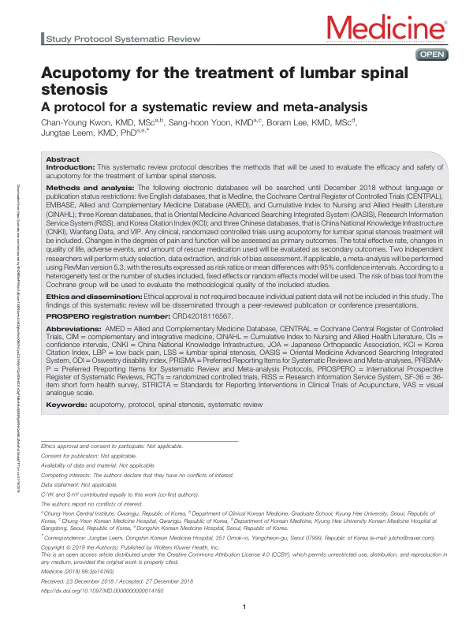

Acupotomy for the treatment of lumbar spinal stenosis
Kwon CY, Yoon Sh, Lee B, Leem J
Medicine 98(3):e14160

첫 장 · 오픈액세스First page · open access
논문 소개Summary
도침은 끝이 납작한 침으로 유착된 조직을 풀어 주는 시술입니다. 요추 척추관협착증에 쓰이지만 그 효과와 안전성을 체계적으로 모아 본 적은 없었습니다. 이 논문은 그 고찰을 어떻게 수행할지 미리 밝혀 둔 프로토콜입니다.
2018년 12월까지, 언어와 출판 상태를 제한하지 않고 열한 개 데이터베이스를 검색합니다. 영어권에서 메드라인과 코크란 중앙등록부, 엠베이스, 보완대체의학 데이터베이스, 간호·보건 데이터베이스를 보고, 국내에서 오아시스와 학술연구정보서비스, 한국학술지인용색인을, 중국에서 중국학술정보원과 완팡, 웨이푸를 봅니다. 국내와 중국 데이터베이스를 함께 넣은 것은 이 시술의 임상연구가 그 두 곳에 몰려 있기 때문입니다.
일차 결과는 통증과 기능의 변화이고, 이차로 총유효율과 삶의 질, 이상반응, 구제약물 사용량을 봅니다. 구제약물 사용량을 넣은 것이 눈에 띕니다. 통증 점수만으로는 환자가 진통제를 얼마나 덜 먹게 되었는지가 드러나지 않기 때문입니다.
두 연구자가 각각 문헌 선정과 자료 추출, 비뚤림 위험 평가를 합니다. 통합이 가능하면 메타분석을 수행해 위험비나 평균차와 95% 신뢰구간으로 결과를 냅니다. 이질성 검정과 포함된 연구 수에 따라 고정효과 또는 랜덤효과 모형을 고르고, 방법론적 질은 코크란 비뚤림 위험 평가도구로 평가합니다. 계획은 PROSPERO에 등록해 두었습니다.
프로토콜이므로 결과는 없습니다. 개별 환자 자료를 쓰지 않으므로 윤리 승인도 필요하지 않습니다. 이 연구실이 도침의 안전성과 보고 표준을 여러 편에 걸쳐 다뤄 온 것과 같은 줄기에 있는 글입니다. 무엇이 효과가 있는지를 묻기 전에 무엇이 어떻게 보고되었는지를 먼저 세어 보는 방식입니다.
Acupotomy uses a flat-tipped needle to release adhered tissue. It is used for lumbar spinal stenosis, yet its efficacy and safety had never been systematically assembled. This paper is the protocol declaring in advance how that review will be conducted.
Eleven databases will be searched to December 2018 without restriction on language or publication status: Medline, the Cochrane Central Register of Controlled Trials, EMBASE, AMED and CINAHL in English; OASIS, RISS and the Korea Citation Index in Korea; and CNKI, Wanfang and VIP in China. Korean and Chinese databases are included because clinical research on this procedure is concentrated in those two countries.
Primary outcomes are changes in pain and function; secondary outcomes are the total effective rate, quality of life, adverse events and the amount of rescue medication used. The inclusion of rescue medication is notable — a pain score alone does not reveal how far a patient's use of analgesics has fallen.
Two researchers independently carry out study selection, data extraction and risk of bias assessment. Where synthesis is possible, meta-analysis will express results as risk ratios or mean differences with 95% confidence intervals, with fixed- or random-effects models chosen according to heterogeneity testing and the number of included studies, and methodological quality assessed using the Cochrane risk of bias tool. The plan was registered with PROSPERO.
Being a protocol, it reports no results, and no ethical approval is required since individual patient data are not used. It belongs to the same line of work through which this laboratory has repeatedly addressed the safety and reporting standards of acupotomy: counting what has been reported, and how, before asking what works.
인용Cite
Kwon CY, Yoon Sh, Lee B, Leem J. Acupotomy for the treatment of lumbar spinal stenosis. Medicine. 2019;98(3):e14160. doi:10.1097/MD.0000000000014160